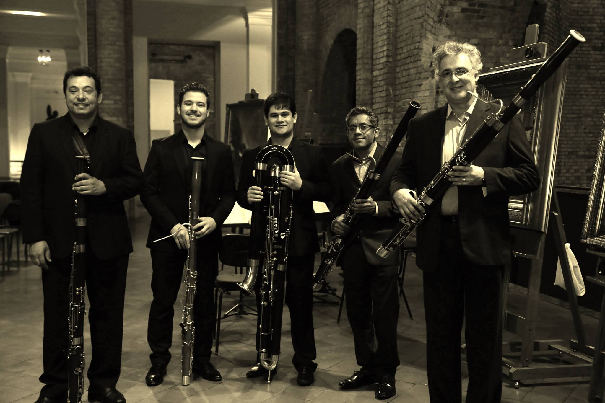
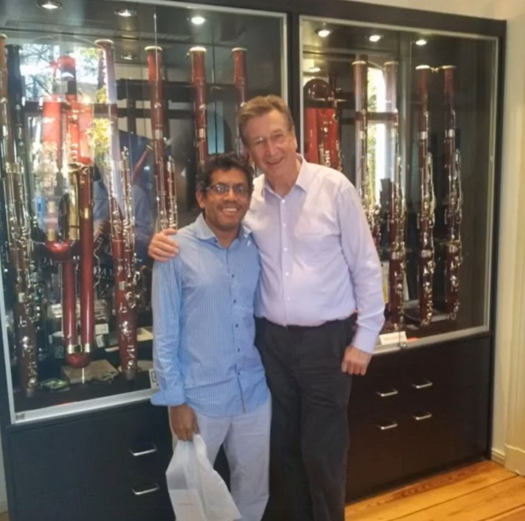
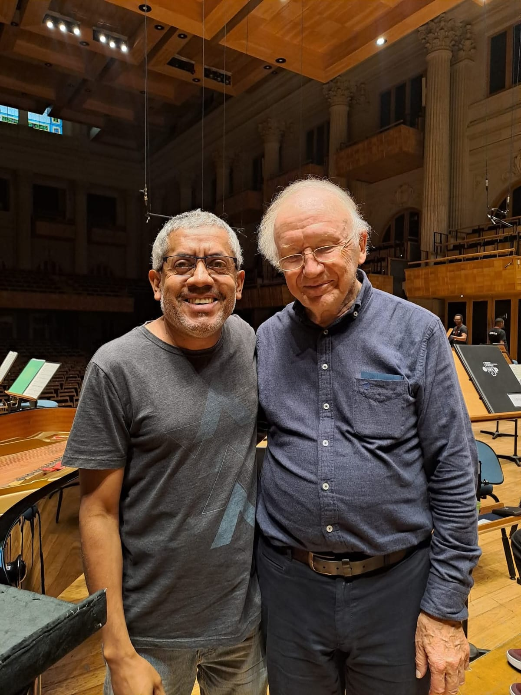
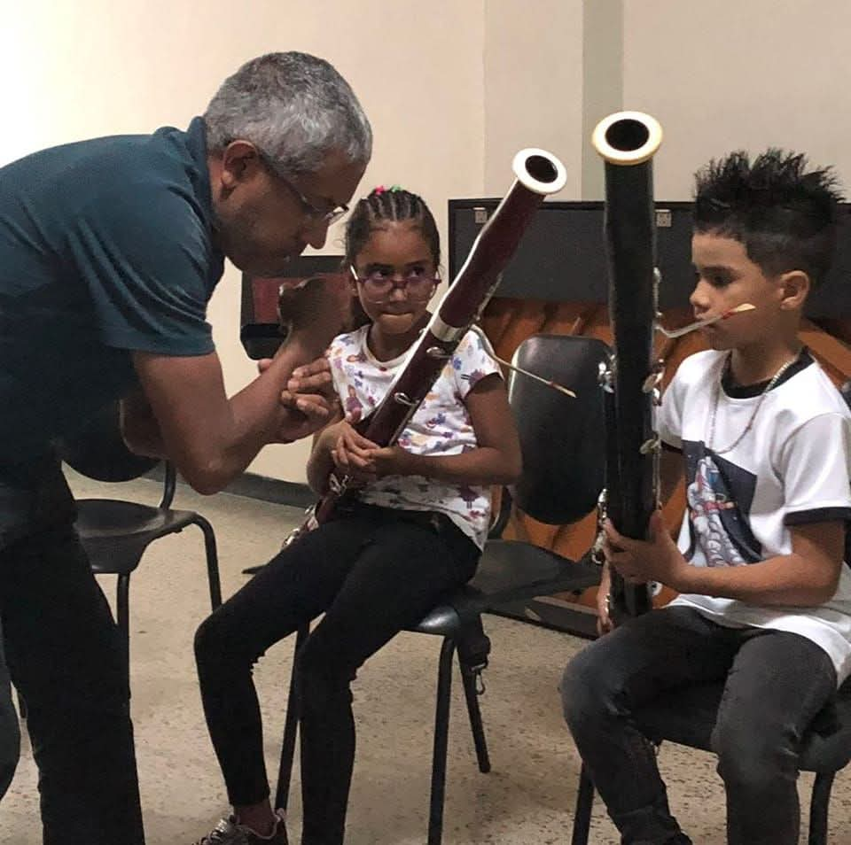

Integrante da Osesp desde: 2004
Uma vida dedicada ao Som Perfeito
Natural de Barquisimeto, na Venezuela, o fagotista José Arion Linarez começou os estudos musicais aos 12 anos de idade, no Conservatório de Música Blanca Estrella de Méscoli. Aos 14, decidiu estudar fagote, passando a ser orientado por Ramón Merchán e, posteriormente, por Omar Ascanio, solista da Orquestra Sinfônica Simón Bolívar.
Movido pela sonoridade versátil do instrumento, apresentou os primeiros recitais e concertos ainda muito jovem. Daquela época, destaca-se a interpretação do Concerto para Fagote em Mi Menor RV 484, de Antonio Vivaldi, com o grupo Jóvenes Arcos, da Venezuela. Depois dessa apresentação, passou a realizar extensa atividade orquestral juvenil, o que o levou ao primeiro trabalho profissional no país, junto à Orquestra Sinfônica Gran Mariscal de Ayacucho, liderada por Rodolfo Saglimbeni.
Em 1993, recebeu bolsa de estudos da Fundación Gran Mariscal de Ayacucho e da Universidade Carnegie Mellon, em Pittsburgh, na Pensilvânia, onde estudou com Nancy Goeres. Nos Estados Unidos, foi premiado em música de câmara pela Pittsburgh Concert Society, obteve o 2º lugar no Concurso de Música de Câmara da Escola de Música da Universidade Carnegie Mellon e o 1º lugar no Concurso Jovens Solistas da Orquestra Sinfônica Jovem de Pittsburgh.
Participou de importantes festivais norte-americanos, como o Tanglewood Music Festival, o Sarasota Music Festival, o Aspen Music Festival and School e o Music Academy of the West. Frequentou ainda o Festival de Música de Schleswig-Holstein, na Alemanha, e o Semanas Musicales de Frutillar, no Chile.
Como solista, apresentou-se à frente da Orquestra Sinfônica de Wheeling, da Orquestra Filarmônica da Universidade Carnegie Mellon, da Orquestra Sinfônica de Westmoreland, nos Estados Unidos, e da Orquestra Sinfônica de los Llanos, na Venezuela. Além disso, interpretou junto à Orquestra Sinfônica da Universidade de Serena, no Chile, o Concerto para Fagote em Si bemol Maior K.191, de W. A. Mozart, sob a regência de Celso Torres Mora, em 2002.
Arion Liñarez foi instrutor das madeiras da Fundación de Orquestas Juveniles e Infantiles de Chile (FOJI) e fagote solista da Orquestra Sinfônica Nacional do Chile.
Atualmente, José Arion Linarez toca com um fagote construído pelo renomado luthier Benson Bell.
Repertório & Concertos
Sala de Projeções

Encontros Musicais
A Biblioteca Fotográfica

OSESP
Temporada OSESP março 2026.

Sala São Paulo
Concierto com OSESP 2020

Semperoper Dresden
Junto ao monumento de C.M. von Weber.

Inspiração Clássica
Estátua de W.A. Mozart na Semperoper.

Fábrica Wilhelm Heckel
Wiesbaden-Biebrich, Alemanha (2010).

Maestro José Antonio Abreu
Encontro em Caracas (2011).

Maestro Gustavo Dudamel
Encontro em Caracas (2011).

Auditorio Nacional
Apresentação em Madrid, Espanha.

Filharmonia Narodowa
Apresentação em Varsóvia, Polônia.

Apresentação de Gala
Fagotista Principal no palco.

Benson Bell
Com meu luthier Benson Bell.

Maestro Ramón Merchán
Com meu maestro de fagote (2023).

Maestro Klaus Thunemann
Com o Maestro Klaus Thunemann. Alemanha.

Maestro Heinz Holliger
Com o Maestro Heinz Holliger. São Paulo.
Grupo Camaleão Bassonns
São Paulo.

Aula com alunos iniciantes
Aula com alunos iniciantes. Yaracuy (2023).

Festival Internacional de Hortolândia
2026.
Artesanato de Precisão
O Atelier
Cada palheta é esculpida à mão. Clique nas imagens para abrir a galeria macro.

Palheta Profissional
Afinação impecável e grande projeção. Raspagem europeia.
Raspagem europeia · Alta projeção

Palheta Estudante
Projetada para uma resposta fácil e controle da afinação.